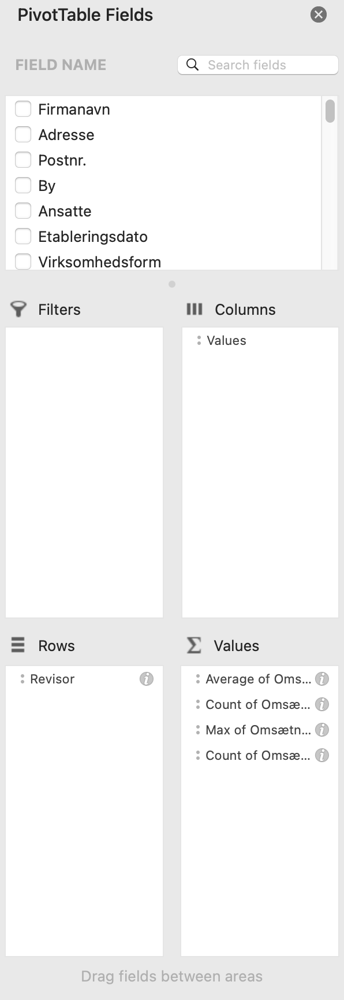

Excel Pivottabeller
-
Lær om Excel Pivottabeller
Formål:
At kunne benytte Excel Pivottabeller
Gnist:
Hvordan sorterer og arrangerer man data i Excel?
Anslået tidsforbrug:
1 time
Forudsætning:
Læs kapitel 31 i Statistik online bogen: Excel Pivottabeller, se videoerne og forsøg at løse eksemplerne i videoerne.
Du behøver ikke arbejde med sidste del af kapitlet dvs. fra og med afsnittene om Specielle Excelfunktioner , Aktiedata Google Sheets , Quiz og Spørgsmål, skal ikke læses/løses
Opgave:
Besvar spørgsmålene, upload i Workshop inden deadline, sammenlign efterfølgende med en andens studerende besvarelse under Workshop.
Feedback:
Feedback2me under Workshop
-
Excelfil
For at besvare de nedenstående spørgsmål, skal man benytte nedenstående Excelfil og Excel's pivotværktøj.
Danske virksomheders regnskabstal Excelfil -
Spørgsmål
-
1
Benyt pivottabeller til at bestemme gennemsnitlig omsætning for følgende 5 revisorers kunder, svaret skal stå direkte i en pivottabel:
Pricewaterhousecoopers Statsautoriseret Revisionspartnerselskab
Ey Godkendt Revisionspartnerselskab
Deloitte Statsautoriseret Revisionspartnerselskab
BDO Statsautoriseret Revisionsaktieselskab
KPMG P/S
Bemærk du skal altså benytte variablene Revisor og omsætning i pivottabellen.
Vink til opgaven:
Herunder er et forslag til hvordan du kan besvare opgaven i ExcelHerunder ses feltvælgeren

Herunder ses pivottabellen, filter til de 5 revisorer er valgt i Row labels

-
2
Tilføj i ovenstående tabel i svaret til 1. en søjle der viser antal kunder og højeste omsætning for de 5 revisorer
Vink til opgaven:
Herunder er et forslag til hvordan du kan besvare opgaven i ExcelHerunder ses feltvælgeren

Herunder ses pivottabellen

-
3
Beregn i samme pivottabel fra forrige spørgsmål andelen af kunder ud fra antallet af virksomheder for de 5 revisorer
Vink til opgaven:
Herunder er et forslag til hvordan du kan besvare opgaven i ExcelHerunder ses feltvælgeren

-
4
Benyt pivottabellen til lave et deldatasæt "Pricewaterhousecoopers Statsautoriseret Revisionspartnerselskab" kunder.
Lav en ny pivotabel med disse kunder
Lav ud fra den ny pivottabel et histogram for kundernes omsætning, grupper med start 1 og bredde 10.000.000 kr
Vink til opgaven:
Herunder er et forslag til hvordan du kan besvare opgaven i ExcelHerunder ses grupperingen med start 1 og bredde 10.000.000 kr

Herunder ses pivottabellen og histogrammet

-
5
Benyt pivottabel til at bestemme filtrere det oprindelige datasæt så vi kun ser på virksomheder i
By: "København K, N, NV, Ø, SV, S og V"
Lav et cirkeldiagram for andelen af "Virksomhedsform" i procent
Fjern følgende fra virksomheder fra "Virksomhedsform": Iværksætterselskab
Kommanditaktieselskab/Partnerselskab
Kommanditselskab
Lav et nyt cirkeldiagram for de resterende virksomhedsformer
Vink til opgaven:
Herunder er et forslag til hvordan du kan besvare opgaven i ExcelProcent af rækketotal er herunder benyttet for at få angivet andelene i procent

Cirkeldiagram for alle virksomhedsformer

Cirkeldiagram for den begrænsede mængde af virksomhedsformer